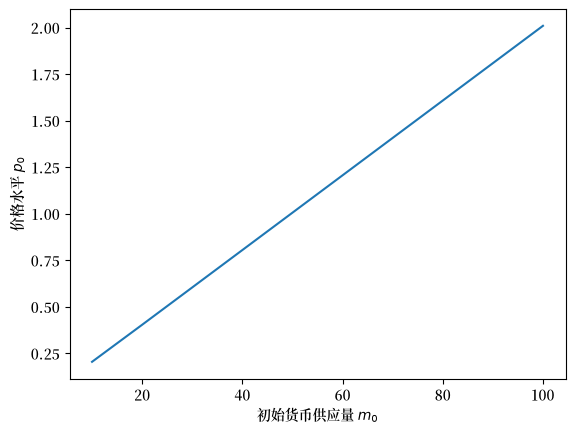
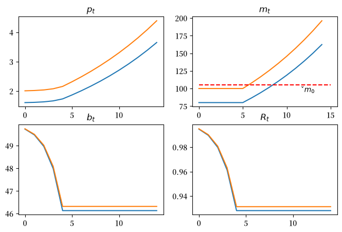
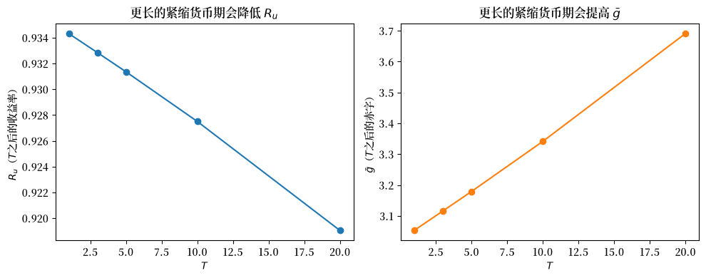
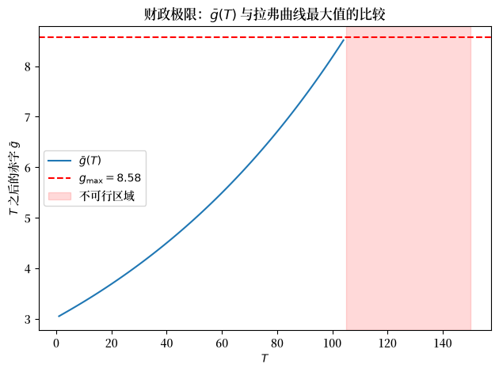

31. 一些不愉快的货币主义算术#
31.1. 概述#
本讲座建立在 通过货币资助的政府赤字和价格水平 中介绍的概念和问题基础上。
在那个讲座中，我们探讨了通货膨胀税率及其相关货币收益率的拉弗曲线上的静态均衡点。
本讲中，我们将研究一个特殊情况：某个静态均衡只在时间 \(T > 0\) 之后才成为主导状态。
在 \(t=0, \ldots, T-1\) 期间，货币供应、价格水平和计息政府债务会沿着一条过渡路径演变，直到 \(t=T\) 时结束。
在这个过渡期内，实际货币余额 \(\frac{m_{t+1}}{p_t}\) 与到期的一期指数化政府债券 \(\tilde{R} B_{t-1}\) 之间的比率会逐期下降。
这种变化对于 \(t \geq T\) 时期必须通过印钞来融资的政府总利息赤字产生了重要影响。
关键的货币与债券比率只有在时间 \(T\) 及之后才会稳定下来。
而且，\(T\) 越大，在 \(t \geq T\) 时期必须通过印钞融资的政府总利息赤字就越大。
这些发现构成了萨金特和华莱士(Sargent and Wallace)在”不愉快的货币主义算术”一文中的核心论点 [Sargent and Wallace, 1981]。
前一讲座已经介绍了本讲中出现的货币供应和需求模型。
它还刻画了我们在本讲中将通过逆向推导得出的稳态均衡。
除了学习”不愉快的货币主义算术”外，本讲座还将教授如何实现一个用于计算初始价格水平的不动点算法。
31.2. 设置#
让我们首先回顾 通过货币资助的政府赤字和价格水平 中的模型设定。
如有需要，请参考那篇讲义并查看我们将在本讲中继续使用的Python代码。
对于 \(t \geq 1\)，实际货币余额的变化遵循以下方程：
或者
其中
\(b_t = \frac{m_{t+1}}{p_t}\) 是第 \(t\) 期末的实际余额
\(R_{t-1} = \frac{p_{t-1}}{p_t}\) 是从 \(t-1\) 到 \(t\) 期间实际余额的毛收益率
对实际余额的需求是
其中 \(\gamma_1 > \gamma_2 > 0\).
31.3. 货币与财政政策#
在通过货币资助的政府赤字和价格水平的基础模型基础上，我们引入了一期通胀指数化政府债券，作为政府筹集财政资金的另一种渠道。
假设 \(\widetilde R > 1\) 是政府一期通胀指数化债券的固定实际回报率。
有了这个额外的融资工具，政府在时间 \(t \geq 0\) 的预算约束可以表示为
在时间 \(0\) 开始之前，公众持有 \(\check m_0\) 单位的货币（以美元计）和 \(\widetilde R \check B_{-1}\) 单位的一期指数化债券（以时间 \(0\) 的商品计量）；这两个数值是模型外部设定的初始条件。
值得注意的是，\(\check m_0\) 是一个名义变量（以美元计），而 \(\widetilde R \check B_{-1}\) 是一个实际变量（以时间 \(0\) 的商品计量）。
31.3.1. 公开市场操作#
在时间 \(0\) 时，政府可以调整其债务结构，但必须遵循以下公开市场操作约束：
或
该方程表明，政府（例如中央银行）可以通过增加 \(B_{-1}\)（相对于 \(\check B_{-1}\)）来减少 \(m_0\)（相对于 \(\check m_0\)）。
这是中央银行标准的公开市场操作约束的一个版本，即中央银行通过从公众手中购买政府债券来扩大货币存量。
31.4. 在 \(t=0\) 时的公开市场操作#
我们将按照萨金特和华莱士 [Sargent and Wallace, 1981] 的分析框架，研究中央银行政策的后果：在面对以正值 \(g\) 表现出来的持续性财政赤字时，中央银行使用公开市场操作来降低价格水平。
在时间 \(0\) 之前，政府在满足约束 (31.3) 的条件下选择 \((m_0, B_{-1})\)。
对于 \(t =0, 1, \ldots, T-1\)，
而对于 \(t \geq T\)，
其中
我们的目标是计算这一货币和财政政策实施方案下的均衡序列 \(\{p_t,m_t,b_t, R_t\}_{t=0}^\infty\)。
在这里，财政政策是指决定一系列净利息政府赤字 \(\{g_t\}_{t=0}^\infty\) 的一系列行动，这些赤字必须通过向公众发行货币或有息债券来融资。
货币政策或债务管理政策则是指决定政府如何在其对公众的债务组合中，将有息部分（政府债券）和无息部分（货币）进行分配的一系列行动。
公开市场操作是指政府（或其代理机构，例如中央银行）的货币政策行动，即政府用新发行的货币从公众手中购买政府债券，或向公众出售债券并从流通中收回所得货币。
31.5. 算法（基本思想）#
我们从 \(t=T\) 开始反向计算，首先确定与 通货膨胀税的拉弗曲线 中低通胀、低通胀税率静态均衡相对应的 \(p_T\) 和 \(R_u\) 值。
在开始描述算法之前，我们需要回顾一下货币的静态收益率 \(\bar{R}\) 满足以下二次方程
二次方程 (31.5) 有两个根，\(R_l < R_u < 1\)。
出于 通过货币资助的政府赤字和价格水平 末尾所描述的原因，我们选择较大的根 \(R_u\)。
接下来，我们计算
我们可以通过对 \(t \geq 1\) 依次求解方程 (31.1) 和 (31.2)，来计算与均衡相对应的收益率和实际余额的延续序列 \(\{R_t, b_t\}_{t=T+1}^\infty\)：
31.6. 在时间 \(T\) 之前#
定义
我们的限制 \(\gamma_1 > \gamma_2 > 0\) 意味着 \(\lambda \in [0,1)\)。
我们想要计算
因此，
我们可以通过迭代以下公式来实现前述公式：
起始于
31.7. 算法（伪代码）#
现在让我们更详细地以伪代码的形式描述一个计算算法，这种描述构成了伪代码，因为它接近于我们可以提供给Python程序员的一组指令。
为了计算一个均衡，我们使用以下算法。
Algorithm 31.1
给定 参数 \(g, \check m_0, \check B_{-1}, \widetilde R >1, T \)。
我们定义一个从 \(p_0\) 到 \(\widehat p_0\) 的映射，如下。
设置 \(m_0\)，然后计算 \(B_{-1}\) 以满足时刻 \(0\) 时公开市场操作的约束
通过以下公式计算 \(B_{T-1}\)
计算
从上面的方程 (31.7) 计算新的 \(p_0\) 估计值，称为 \(\widehat p_0\)
注意前面的步骤定义了一个映射
我们寻找 \({\mathcal S}\) 的不动点，即满足 \(p_0 = {\mathcal S}(p_0)\) 的解。
通过迭代下面的松弛算法直至收敛来计算不动点
其中 \(\theta \in [0,1)\) 是一个松弛参数。
31.8. 计算示例#
我们将设置模型参数，使得时间 \(T\) 之后的稳态与 通货膨胀税的拉弗曲线 中最初的稳态相同。
具体来说，我们设定 \(\gamma_1=100, \gamma_2 =50, g=3.0\)。
在那个讲座中我们设定 \(m_0 = 100\)，但现在对应的量将是内生的 \(M_T\)。
对于新参数，我们将设置 \(\tilde R = 1.01, \check B_{-1} = 0, \check m_0 = 105, T = 5\)。
我们将考察一个”小型”公开市场操作，具体方法是设置 \(m_0 = 100\)。
这些参数设定意味着，在时间 \(0\) 之前，”中央银行”向公众出售债券，以换取 \(\check m_0 - m_0 = 5\) 单位的货币。
这使得公众持有的货币减少，但持有的政府计息债券增加。
由于公众持有的货币减少（其供给已经缩减），可以合理预期时间 \(0\) 时的价格水平将被推低。
但这并不是故事的全部，因为时间 \(0\) 时的这次公开市场操作会对未来 \(m_{t+1}\) 的设定以及政府总利息赤字 \(\bar g_t\) 产生影响。
首先，我们需要导入必要的库：
import numpy as np
import matplotlib.pyplot as plt
from collections import namedtuple
import matplotlib as mpl
FONTPATH = "fonts/SourceHanSerifSC-SemiBold.otf"
mpl.font_manager.fontManager.addfont(FONTPATH)
plt.rcParams['font.family'] = ['Source Han Serif SC']
现在让我们用Python来实现我们的伪代码。
# 创建一个包含参数的命名元组
MoneySupplyModel = namedtuple("MoneySupplyModel",
["γ1", "γ2", "g",
"R_tilde", "m0_check", "Bm1_check",
"T"])
def create_model(γ1=100, γ2=50, g=3.0,
R_tilde=1.01,
Bm1_check=0, m0_check=105,
T=5):
return MoneySupplyModel(γ1=γ1, γ2=γ2, g=g,
R_tilde=R_tilde,
m0_check=m0_check, Bm1_check=Bm1_check,
T=T)
msm = create_model()
def S(p0, m0, model):
# 解包参数
γ1, γ2, g = model.γ1, model.γ2, model.g
R_tilde = model.R_tilde
m0_check, Bm1_check = model.m0_check, model.Bm1_check
T = model.T
# 公开市场操作
Bm1 = 1 / (p0 * R_tilde) * (m0_check - m0) + Bm1_check
# 计算 B_{T-1}
BTm1 = R_tilde ** T * Bm1 + ((1 - R_tilde ** T) / (1 - R_tilde)) * g
# 计算 g bar
g_bar = g + (R_tilde - 1) * BTm1
# 解二次方程
Ru = np.roots((-γ1, γ1 + γ2 - g_bar, -γ2)).max()
# 计算 p0
λ = γ2 / γ1
p0_new = (1 / γ1) * m0 * ((1 - λ ** T) / (1 - λ) + λ ** T / (Ru - λ))
return p0_new
def compute_fixed_point(m0, p0_guess, model, θ=0.5, tol=1e-6):
p0 = p0_guess
error = tol + 1
while error > tol:
p0_next = (1 - θ) * S(p0, m0, model) + θ * p0
error = np.abs(p0_next - p0)
p0 = p0_next
return p0
让我们看看在稳态\(R_u\)均衡中，价格水平\(p_0\)如何依赖于初始货币供应量\(m_0\)。
注意\(p_0\)作为\(m_0\)的函数的斜率是恒定的。
这一结果表明，我们的模型验证了货币数量论的结论， 这正是 萨金特和华莱士 [Sargent and Wallace, 1981]用来证明其标题中”货币主义”一词的合理性而刻意融入其模型的。
m0_arr = np.arange(10, 110, 10)
plt.plot(m0_arr, [compute_fixed_point(m0, 1, msm) for m0 in m0_arr])
plt.ylabel('价格水平 $p_0$')
plt.xlabel('初始货币供应量 $m_0$')
plt.show()
findfont: Failed to find font weight normal, now using 600.
findfont: Failed to find font weight normal, now using 600.
{kind=link}

现在让我们编写代码来试验前面描述的在时刻 \(0\) 的公开市场操作。
def simulate(m0, model, length=15, p0_guess=1):
# 解包参数
γ1, γ2, g = model.γ1, model.γ2, model.g
R_tilde = model.R_tilde
m0_check, Bm1_check = model.m0_check, model.Bm1_check
T = model.T
# (pt, mt, bt, Rt)
paths = np.empty((4, length))
# 公开市场操作
p0 = compute_fixed_point(m0, 1, model)
Bm1 = 1 / (p0 * R_tilde) * (m0_check - m0) + Bm1_check
BTm1 = R_tilde ** T * Bm1 + ((1 - R_tilde ** T) / (1 - R_tilde)) * g
g_bar = g + (R_tilde - 1) * BTm1
Ru = np.roots((-γ1, γ1 + γ2 - g_bar, -γ2)).max()
λ = γ2 / γ1
# t = 0
paths[0, 0] = p0
paths[1, 0] = m0
# 1 <= t <= T
for t in range(1, T+1, 1):
paths[0, t] = (1 / γ1) * m0 * \
((1 - λ ** (T - t)) / (1 - λ)
+ (λ ** (T - t) / (Ru - λ)))
paths[1, t] = m0
# t > T
for t in range(T+1, length):
paths[0, t] = paths[0, t-1] / Ru
paths[1, t] = paths[1, t-1] + paths[0, t] * g_bar
# Rt = pt / pt+1
paths[3, :T] = paths[0, :T] / paths[0, 1:T+1]
paths[3, T:] = Ru
# bt = γ1 - γ2 / Rt
paths[2, :] = γ1 - γ2 / paths[3, :]
return paths
def plot_path(m0_arr, model, length=15):
fig, axs = plt.subplots(2, 2, figsize=(8, 5))
titles = ['$p_t$', '$m_t$', '$b_t$', '$R_t$']
for m0 in m0_arr:
paths = simulate(m0, model, length=length)
for i, ax in enumerate(axs.flat):
ax.plot(paths[i])
ax.set_title(titles[i])
axs[0, 1].hlines(model.m0_check, 0, length, color='r', linestyle='--')
axs[0, 1].text(length * 0.8, model.m0_check * 0.9, r'$\check{m}_0$')
plt.show()
plot_path([80, 100], msm)
findfont: Failed to find font weight normal, now using 600.
findfont: Failed to find font weight normal, now using 600.
{kind=link}

Fig. 31.1 不愉快的算术#
Fig. 31.1 总结了两个实验的结果，体现了萨金特和华莱士 [Sargent and Wallace, 1981] 的核心观点：
在 \(t=0\) 时降低货币供应量的公开市场操作会降低 \(t=0\) 时的价格水平
公开市场操作后时间 \(0\) 时的货币供应量越低，时间 \(0\) 时的价格水平也越低
减少时间 \(0\) 公开市场操作后货币供应量的公开市场操作，也会降低 \(t \geq T\) 时期货币的回报率 \(R_u\)，因为这会带来更高的总利息政府赤字，而这一赤字必须在 \(t \geq T\) 时通过印钞（即征收通货膨胀税）来融资
\(R\) 在维持货币稳定性以及应对政府赤字导致的通胀加剧的后果方面具有重要意义。因此，可能会选择较大的 \(R\) 来减轻通胀对实际回报率造成的负面影响
31.9. 练习#
Exercise 31.1
紧缩货币期 \(T\) 的长度如何放大不愉快的算术。
本讲表明，中央银行在 \(t=0\) 时降低 \(m_0\) 的公开市场操作会立即降低价格水平，但会迫使 \(T\) 之后的赤字 \(\bar g\) 上升，从而使收益率 \(R_u\) 永久降低（即通货膨胀永久升高）。
同样的机制也会随着 \(T\) 的增大而发挥作用：在固定 \(m_0 = 100\) 的情况下，更长的债券融资赤字期会积累更多的计息债务 \(B_{T-1}\)，而这些债务最终必须通过印钞来偿还。
固定 \(m_0 = 100\)，让 \(T \in \{1, 3, 5, 10, 20\}\) 变化。对于每个 \(T\)：
a. 使用 simulate 获得 \(T\) 之后的稳态收益率 \(R_u\)（它等于 paths[3, T]）。
b. 直接根据模型参数和不动点 \(p_0\)，计算 \(T\) 之后的政府赤字 \(\bar g = g + (\tilde R - 1) B_{T-1}\)。
c. 将 \(R_u\) 和 \(\bar g\) 相对于 \(T\) 绘制在并排的图表中，并解释为什么随着 \(T\) 的增大，\(R_u\) 下降而 \(\bar g\) 上升。
Solution to Exercise 31.1
m0 = 100
T_values = [1, 3, 5, 10, 20]
R_u_list = []
g_bar_list = []
for T_val in T_values:
model_T = create_model(T=T_val)
# 均衡价格水平
p0 = compute_fixed_point(m0, 1, model_T)
# 公开市场操作创造了债券
Bm1 = (1 / (p0 * model_T.R_tilde)) * (model_T.m0_check - m0) \
+ model_T.Bm1_check
BTm1 = (model_T.R_tilde ** T_val * Bm1
+ (1 - model_T.R_tilde ** T_val) / (1 - model_T.R_tilde) * model_T.g)
g_bar = model_T.g + (model_T.R_tilde - 1) * BTm1
g_bar_list.append(g_bar)
# 通过 simulate 获得的 T 之后的收益率
paths = simulate(m0, model_T, length=T_val + 3)
R_u_list.append(paths[3, T_val])
fig, axes = plt.subplots(1, 2, figsize=(10, 4))
axes[0].plot(T_values, R_u_list, marker='o')
axes[0].set_xlabel('$T$')
axes[0].set_ylabel('$R_u$（$T$之后的收益率）')
axes[0].set_title('更长的紧缩货币期会降低 $R_u$')
axes[1].plot(T_values, g_bar_list, marker='o', color='tab:orange')
axes[1].set_xlabel('$T$')
axes[1].set_ylabel(r'$\bar{g}$（$T$之后的赤字）')
axes[1].set_title('更长的紧缩货币期会提高 $\\bar{g}$')
plt.tight_layout()
plt.show()
print(f"\n{'T':>4} {'g_bar':>8} {'R_u':>8}")
print('-' * 26)
for T_val, g_b, Ru in zip(T_values, g_bar_list, R_u_list):
print(f"{T_val:>4} {g_b:>8.4f} {Ru:>8.4f}")
{kind=link}

T g_bar R_u
--------------------------
1 3.0532 0.9343
3 3.1159 0.9328
5 3.1789 0.9314
10 3.3412 0.9275
20 3.6908 0.9191
每增加一期 \(m_t\) 保持不变，就迫使政府以毛利率 \(\tilde R > 1\) 展期其债券，从而使债务存量 \(B_{T-1}\) 复利累积，进而提高 \(\bar g\)。
更高的 \(\bar g\) 处于铸币税拉弗曲线更靠上的位置，这要求更低的 \(R_u\)，或更高的通货膨胀税率。
这就是”不愉快的货币主义算术”的核心机制：今天更紧缩的货币政策会使长期通货膨胀率变得更高，而不是更低。
Exercise 31.2
财政极限：\(T\) 能有多大？
\(T\) 之后的赤字 \(\bar g\) 必须能够通过通货膨胀税来融资，这意味着它不能超过拉弗曲线所能提供的最大铸币税收入 \(g_{\rm max} = S(\bar R_{\rm max})\)。
在 \(m_0 = 100\) 和默认参数下，求出财政极限 \(T^*\)：即在时间 \(T\) 之后仍然存在可行的静态均衡（即 \(\bar g \leq g_{\rm max}\)）的最大整数 \(T\)。
a. 计算 \(g_{\rm max} = (\gamma_1 + \gamma_2) - \gamma_2/\bar R_{\rm max} - \gamma_1 \bar R_{\rm max}\)，其中 \(\bar R_{\rm max} = \sqrt{\gamma_2/\gamma_1}\)。
b. 对于 \(T = 1, 2, \ldots, 150\)，按照 Exercise 31.1 中的方法计算 \(\bar g(T)\)。
将 $\bar g(T)$ 和 $g_{\rm max}$ 绘制在同一坐标轴上，并将不可行区域用阴影标出。
c. 确定 \(T^*\)，打印 \(T^*\) 处的 \(\bar g\)，并验证在 \(T^* + 1\) 处不存在可行的实数不动点。
Solution to Exercise 31.2
γ1, γ2 = msm.γ1, msm.γ2
# 第 a 部分：拉弗曲线的峰值
R_max = np.sqrt(γ2 / γ1)
g_max = (γ1 + γ2) - γ2 / R_max - γ1 * R_max
print(f"R_max = {R_max:.4f}")
print(f"g_max = {g_max:.4f}")
# 第 b 部分：T = 1 ... 150 时的 g_bar
m0 = 100
T_candidates = np.arange(1, 151)
def S_with_g_bar(p0, m0, model):
γ1, γ2, g = model.γ1, model.γ2, model.g
R_tilde = model.R_tilde
m0_check, Bm1_check = model.m0_check, model.Bm1_check
T = model.T
Bm1 = 1 / (p0 * R_tilde) * (m0_check - m0) + Bm1_check
BTm1 = (R_tilde ** T * Bm1
+ ((1 - R_tilde ** T) / (1 - R_tilde)) * g)
g_bar = g + (R_tilde - 1) * BTm1
disc = (γ1 + γ2 - g_bar)**2 - 4 * γ1 * γ2
if disc < 0:
return np.nan, np.nan, False
Ru = ((γ1 + γ2 - g_bar) + np.sqrt(disc)) / (2 * γ1)
λ = γ2 / γ1
p0_new = (1 / γ1) * m0 * (
(1 - λ ** T) / (1 - λ) + λ ** T / (Ru - λ))
return p0_new, g_bar, True
def compute_fixed_point_and_g_bar(T_val, m0, p0_guess=1,
θ=0.5, tol=1e-6, max_iter=10_000):
model_T = create_model(T=int(T_val))
p0 = p0_guess
for _ in range(max_iter):
p0_new, g_bar, real_roots = S_with_g_bar(p0, m0, model_T)
if not real_roots:
return np.nan, np.nan, False
p0_next = (1 - θ) * p0_new + θ * p0
if np.abs(p0_next - p0) < tol:
_, g_bar, real_roots = S_with_g_bar(p0_next, m0, model_T)
return p0_next, g_bar, real_roots
p0 = p0_next
return np.nan, np.nan, False
g_bar_arr = np.full(len(T_candidates), np.nan)
p0_guess = 1
for i, T_val in enumerate(T_candidates):
p0_star, g_bar, real_roots = compute_fixed_point_and_g_bar(
T_val, m0, p0_guess=p0_guess)
if real_roots:
g_bar_arr[i] = g_bar
p0_guess = p0_star
finite = np.isfinite(g_bar_arr)
feasible = finite & (g_bar_arr <= g_max)
fig, ax = plt.subplots()
ax.plot(T_candidates[finite], g_bar_arr[finite], label=r'$\bar{g}(T)$')
ax.axhline(g_max, color='red', linestyle='--',
label=f'$g_{{\\rm max}} = {g_max:.2f}$')
if np.any(feasible):
T_star = T_candidates[feasible][-1]
ax.axvspan(T_star + 1, T_candidates[-1], alpha=0.15, color='red',
label='不可行区域')
ax.set_xlabel('$T$')
ax.set_ylabel(r'$T$ 之后的赤字 $\bar{g}$')
ax.set_title('财政极限：$\\bar{g}(T)$ 与拉弗曲线最大值的比较')
ax.legend()
plt.tight_layout()
plt.show()
# 第 c 部分：财政极限 T*
p0_next, g_bar_next, real_next = compute_fixed_point_and_g_bar(
T_star + 1, m0, p0_guess=p0_guess)
print(f"\n财政极限 T* = {T_star}")
print(f" g_bar(T*) = {g_bar_arr[T_star - 1]:.4f} <= g_max = {g_max:.4f}")
print(f" T*+1 = {T_star + 1} 时存在可行的实数不动点：{real_next}")
R_max = 0.7071
g_max = 8.5786
财政极限 T* = 104
g_bar(T*) = 8.5136 <= g_max = 8.5786
T*+1 = 105 时存在可行的实数不动点：False
{kind=link}

超过 \(T^*\) 之后，累积的债券债务 \(B_{T-1}\) 变得如此之大，以至于隐含的 \(\bar g\) 超过了铸币税拉弗曲线的峰值。
无论政府将通货膨胀税率设定得多高，都无法获得足够的收入来偿还这笔债务。
因此，财政极限是对紧缩货币政策能够维持多长时间的一个硬性约束，超过这个限度，潜在的财政算术就会变得不连贯。